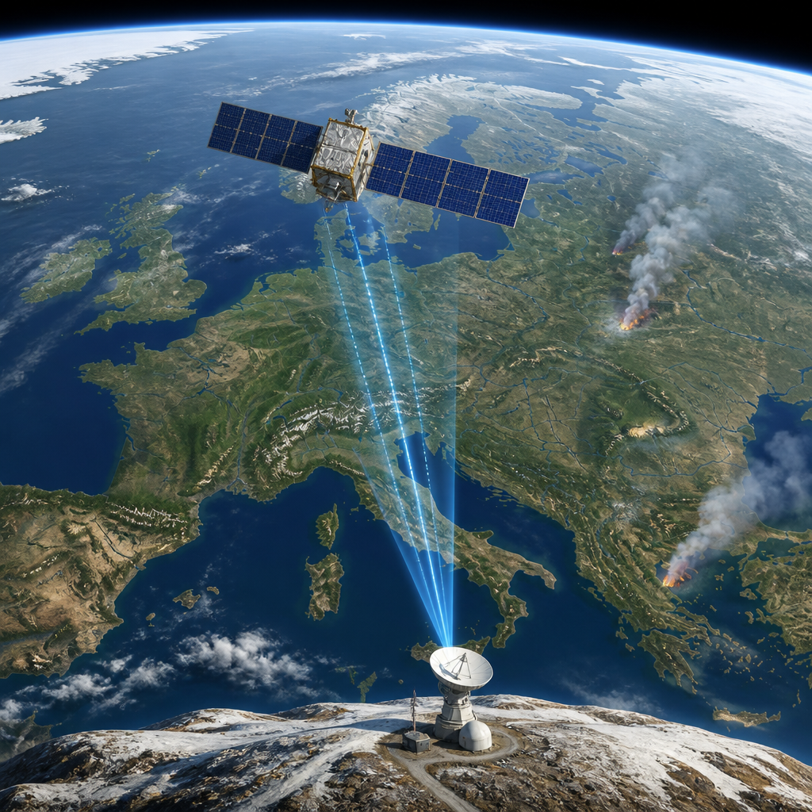
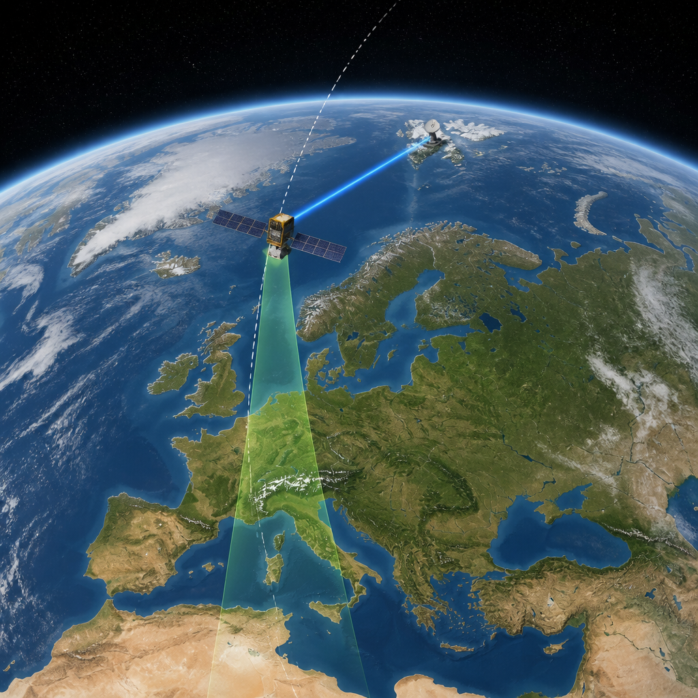

Una nuova strategia di trasmissione riduce i tempi di consegna delle immagini satellitari per i servizi di emergenza.
I dati della missione Copernicus Sentinel-3 possono ora raggiungere i servizi di emergenza fino a tre volte più rapidamente. Il cambiamento riguarda le immagini raccolte sull’Europa centrale e meridionale e punta a rendere più tempestiva la risposta agli incendi boschivi, in particolare nelle aree scarsamente popolate.
Il risultato arriva da una strategia migliorata per trasmettere i dati dai satelliti alle stazioni a terra, sviluppata dai team dell’Agenzia spaziale europea e di Eumetsat. In condizioni standard, Sentinel-3 consegna i dati entro tre ore dall’acquisizione: è il requisito di consegna quasi in tempo reale previsto per la copertura globale. I Paesi partecipanti a Copernicus hanno però chiesto di rendere più rapida la disponibilità dei dati per il rilevamento degli incendi.
Sentinel-3 è una missione di osservazione della Terra che raccoglie dati su oceani, terre emerse e atmosfera. Per farlo utilizza strumenti ad alta risoluzione dedicati alle immagini, alla radiometria e alla topografia. La radiometria è la misurazione della radiazione ricevuta dagli strumenti; la topografia riguarda invece le informazioni sulla forma della superficie terrestre.
I satelliti Sentinel-3 percorrono orbite che seguono linee quasi longitudinali e passano sopra le regioni polari settentrionali e meridionali. Grazie all’ampio campo di vista degli strumenti ottici, la missione copre in media l’intero globo ogni 36 ore. Un’orbita attorno alla Terra richiede circa 100 minuti.
Normalmente, i dati raccolti durante ciascuna orbita vengono trasmessi tutti insieme quando il satellite ha una linea di vista libera verso la stazione di terra di Svalbard, in Norvegia. In questa trasmissione, i dati più vecchi vengono inviati per primi. Era proprio questa sequenza a rallentare l’arrivo delle osservazioni più recenti sull’Europa.
I team hanno quindi modificato il punto in cui viene interrotta la selezione dei dati da scaricare. Mentre il satellite vola verso nord e resta visibile dall’antenna di Svalbard, continua a trasmettere i dati dell’orbita già completata ma invia anche quelli che sta raccogliendo sopra la stazione. In precedenza, il punto di interruzione era poco dopo che il satellite entrava nel campo di visibilità dell’antenna, approssimativamente mentre sorvolava il nord della Germania.

Dopo mesi di test a terra, il nuovo processo è stato usato più regolarmente in orbita dal 3 agosto. Per gran parte dell’Europa, i dati sono diventati disponibili agli utilizzatori finali in circa 90 minuti, invece delle tre ore abituali. Alcuni dati sono stati consegnati persino entro 60 minuti.
Secondo Simon Proud, co-responsabile scientifico dell’ESA per Sentinel-3 NG, questa velocità può aiutare i dati a raggiungere prima i servizi di emergenza e favorire una risposta più rapida. Il potenziale beneficio è particolarmente rilevante nelle zone europee poco popolate e potrebbe contribuire a limitare i danni provocati dagli incendi.
La componente cartografica del Servizio di gestione delle emergenze Copernicus, che offre dati gratuiti a supporto delle risposte ai disastri, è stata attivata 41 volte per incendi in Europa dal primo maggio, con dato aggiornato al 17 agosto. Tra le attivazioni recenti figura un incendio in un’area a circa 70 chilometri a est di Belgrado, capitale della Serbia. Questa zona rientra nella copertura della nuova strategia di Sentinel-3 e i dati sull’area sono stati forniti entro un’ora.
La missione Copernicus Sentinel-3 è in orbita da un decennio: il primo satellite della famiglia è stato lanciato nel 2016. È gestita congiuntamente da Eumetsat e dall’Agenzia spaziale europea per conto della Commissione europea. Copernicus è la componente di osservazione della Terra del programma spaziale dell’Unione europea.
Attualmente sono in orbita Sentinel-3A e Sentinel-3B. A questi si aggiungerà presto Sentinel-3C, previsto in lancio a bordo di Vega-C dallo Spazioporto europeo nella Guyana francese il 14 settembre, alle 22:21 ora locale e alle 03:21 CEST del 15 settembre.
Modificando la trasmissione verso la stazione di Svalbard, Sentinel-3 può rendere disponibili dati sull’Europa centrale e meridionale in 60-90 minuti. Il tempo standard di consegna della missione è di tre ore. L’obiettivo è offrire informazioni più rapide ai servizi impegnati nelle emergenze legate agli incendi.